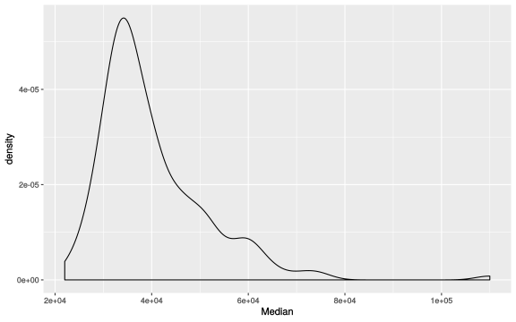
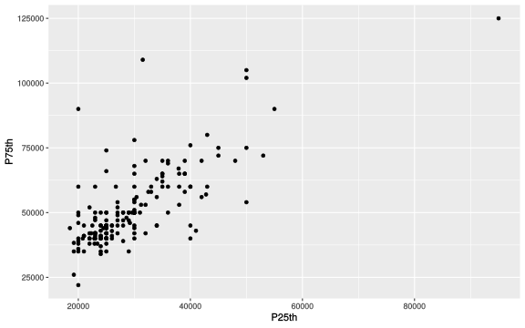
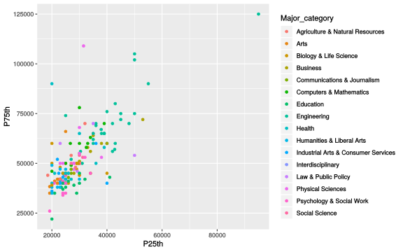
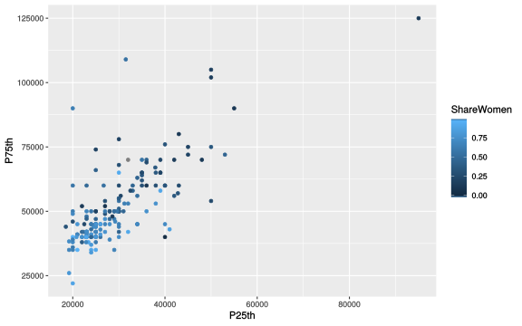
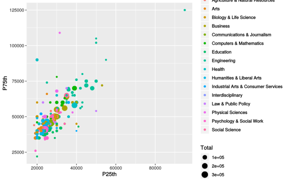
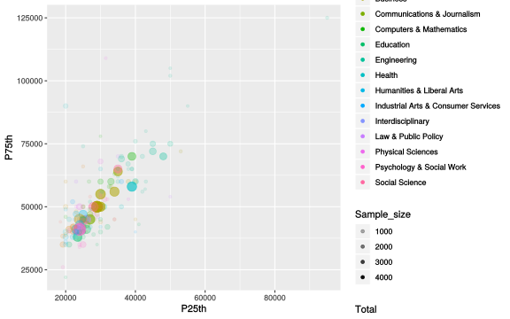
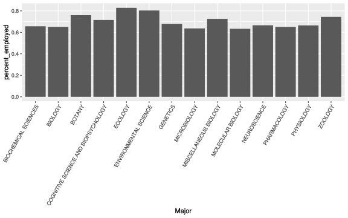
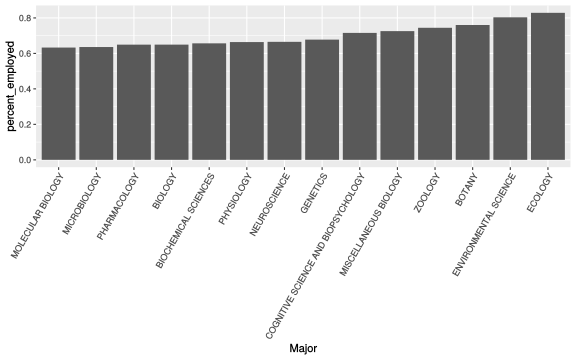

Like the plot function, R’s summary function is a little bit magical:
Take a moment to digest the output; what did we get?
Let’s think about this data set:
Before we go on, let’s fix the Major_category variable. To make a factor, use the factor function:
How does the summary change when this variable is a factor?
Getting the median and quartile ranges for the variables in our data set is useful, but they don’t tell the whole data dispersion story.
To visualize dispersion for a quantitative variable we can use a histogram or density plot. Let’s look at the distribution of median incomes.

What does this plot tell us about median income distribution?
So, we’ve got some income variability to work with! Check data dispersion for other quantitative variables in the data set.
As we’ve seen, you can use color to transform a plot like this:

Into one like this:


We can also use point size to visualize additional quantitative variables:

Finally, values can be mapped to alpha to visually “weight” points:

Let’s make a new column that holds the percentage of people who are employed for each major:
Take a moment to make sure you understand what we did there.
Now make three more columns on your own for:
Let’s use filter to create a table holding data for just the Biology majors:
Take a look at the resulting table.
Now we have a reasonable number of majors to plot on a categorical axis:
ggplot(bio, aes(Major, percent_employed)) +
geom_bar(stat = 'identity') +
theme(axis.text.x = element_text(angle = 60, hjust = 1))
See ?geom_bar for an explanation of the stat argument and ?theme for an explaination for how I tilted the axis text there.
Take a moment to dissect what we did there. See bio_ordered$Major.
Which makes for a prettier plot:
ggplot(bio_ordered, aes(Major, percent_employed)) +
geom_bar(stat = 'identity') +
theme(axis.text.x = element_text(angle = 60, hjust = 1))